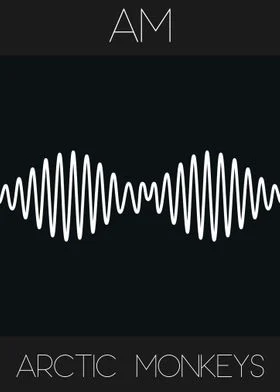

Meus albuns Preferidos
BlackPink
Blackpink é um girl group sul-coreano formado pela YG Entertainment, consistindo das integrantes Jisoo, Jennie, Rosé e Lisa.
Lançamento
2 de outubro de 2020
Artic Monkeys
Arctic Monkeys é uma banda britânica de rock formada em 2002 nos subúrbios da cidade de Sheffield, na Inglaterra. O grupo é formado por Alex Turner, Matt Helders, Jamie Cook e Nick O'Malley.
Lançamento
1 de agosto de 2013
Seu Jorge

Jorge Mário da Silva, conhecido pelo nome artístico de Seu Jorge, é um ator, cantor, compositor e multi-instrumentista brasileiro de MPB, R&B, samba e soul.
Lançamento
20 de novembro de 2012